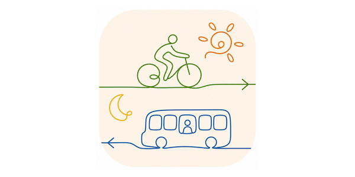
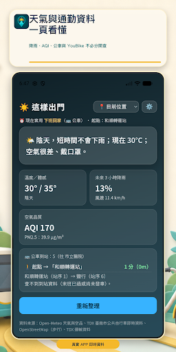
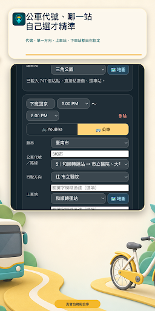
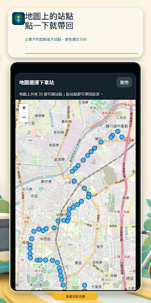
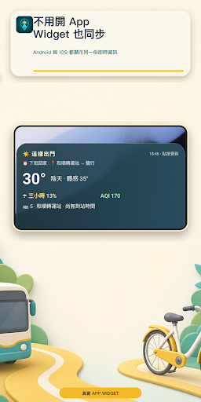

同時查看溫度、降雨與體感資訊，先決定衣著與是否帶傘。
生活 APP · INTRODUCTION
這樣出門
出門以前，一頁看懂今天該怎麼走。
整合天氣、空氣品質、YouBike 與公車資訊，將分散的即時資料整理成清楚的出門建議。

把功能留在
真正需要的時刻。
整合天氣、空氣品質、YouBike 與公車資訊，將分散的即時資料整理成清楚的出門建議。
用清楚等級呈現 AQI 狀況，安排戶外活動前更容易判斷。
掌握附近站點的可借車與可還車數量，降低到了才撲空的機會。
把常用交通資訊放在同一頁，減少出門前反覆切換 App。
完整商店
宣傳圖集。
依照商店目前提供的宣傳素材完整排列；圖片維持原始比例，在手機上會自動換行，不再裁切主要畫面。




使用以前，
值得知道。
這些提醒協助你理解資料界線、平台狀態與合適的使用方式。
建議而非保證
即時資料可能受來源延遲影響，重要行程請預留交通與天候變化時間。
定位用途
位置資訊用來提供附近天氣、站點與交通內容。
平台狀態
Google Play 已提供下載，iOS 1.1 正在等待 Apple 審查。